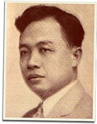

|
j
a v a s c r i p t |
October 27, 1943
Leaving church recently, one of Mrs. Recto's friends said, "Hello Mrs. Von Ribbentrop." Mrs. Recto countered gaily and thought she had a winner with: "Well ... anyway, we shall be able to do some traveling." "Yeah, to Japan," replied her friend. Recently, her son arrived at a party of the Tamaraos gang and got an unexpected greeting. Everyone (including Alunan, whose sense of humor is so good you wonder if he means it) bowed solemnly and hailed: "Hello, Vice Minister." Young Recto had to explain that he had only donned the formal attire to pose when his father signed the alliance because no one else was present! Anyway, the young man took the ribbing hard, and spent some time drinking alone at the bar before pulling a Garbo and going home.

Claro M. Recto
As for Claro M. Recto himself, a good friend of mine before the war, I heard he changed his mind about participating in the government and actually asked for the position of Foreign Minister. Now prominent people look askance in his direction, whispering choice epithets. I still find it hard to believe. |
|
|
|
|